How to use the factory's app on your phone: sign in, read your monthly Green Leaf Account, follow your income and savings, ask for an advance, a loan, manure or tea packets, change your details and contact the office. Step by step, with screenshots and worked examples.
For: suppliers, and the office staff who help them.
Screenshots: taken from the real app with sample data for supplier 5708 of Galaboda Tea Factory (July 2026). Your factory's app has its own name, colours and figures.
As of: 28 October 2026. The rules behind every screen are in "Supplier App: How It Works".
Contents
Before you start
Signing in
Finding your way around
Your monthly account
Reading a bill: two worked examples
Income history
Asking for credit: what every request screen does
Asking for an advance
Asking for a loan
Asking for manure
Asking for tea packets
Savings
Your profile and how you get paid
Contacting the factory
News and notifications
Settings
Help pages
Questions and answers
1. Before you start
Your supplier number. It is the number on your printed slip, next to "Sup. Code" (for example 5708). You do not need the division in brackets.
A first password from the factory office. The office gives it to you at the counter or by telephone. You choose your own the first time you sign in.
The factory's app on your phone, from the App Store or Google Play.
Good to know
The app shows only your own records.
Every figure comes from the factory. The app does not work anything out by itself.
A request is not a decision: the factory office approves or rejects everything you ask for.
2. Signing in
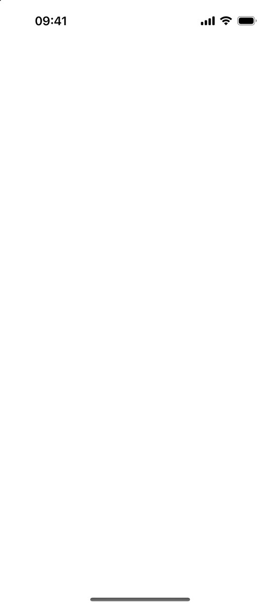
Figure 2.1 Sign in
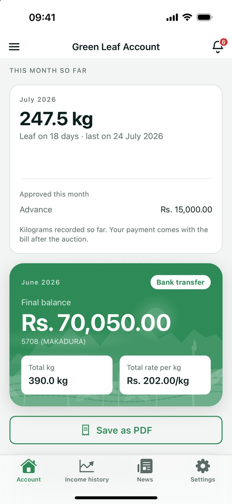
Figure 2.2 Forgot password
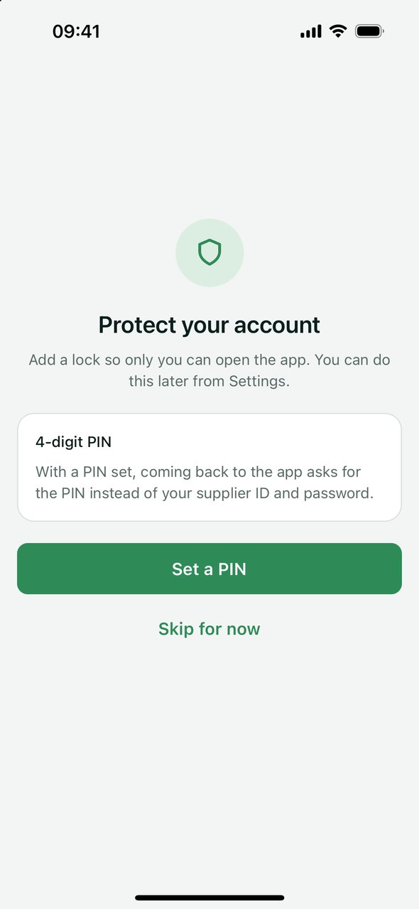
Figure 2.3 Protect your account
2.1 Sign in
Choose your language at the top: සිං, En or தமி. You can change it later in Settings.
Type your supplier number in Supplier ID (for example 5708).
Type your password. Tap the eye to see what you typed.
Leave Remember me on this device on if this is your own phone, so you do not have to type them again.
Tap Sign in.
2.2 The first time: choose your own password
The password from the office is not a secret, because it was given to you over a counter or a telephone. The first time you sign in, the app asks you to choose your own: type it twice. If you already chose one at the office, you may keep it; the app asks only once.
2.3 Protect your account with a PIN
Next, the app offers a 4-digit PIN (Figure 2.3). With a PIN, coming back to the app asks for the PIN instead of your password. Where your phone has a fingerprint or face unlock, you can use that too. Tap Set a PIN, or Skip for now and set it later in Settings.
2.4 Forgot your password?
Tap Forgot password? on the sign-in screen. There is no email reset: the factory office gives you a new password. The screen shows the factory's telephone number and office hours, and Call the factory calls it (Figure 2.2). The new password works once; you choose your own again when you sign in.
3. Finding your way around
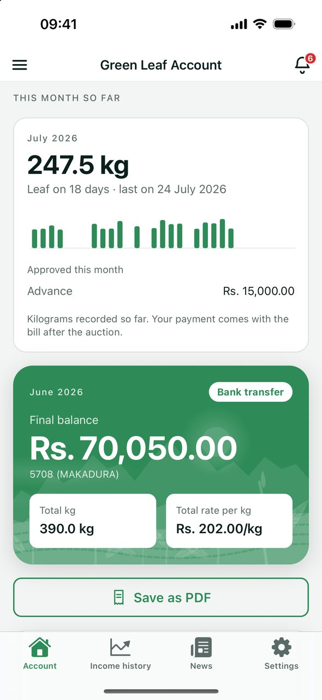
Figure 3.1 The Account tab
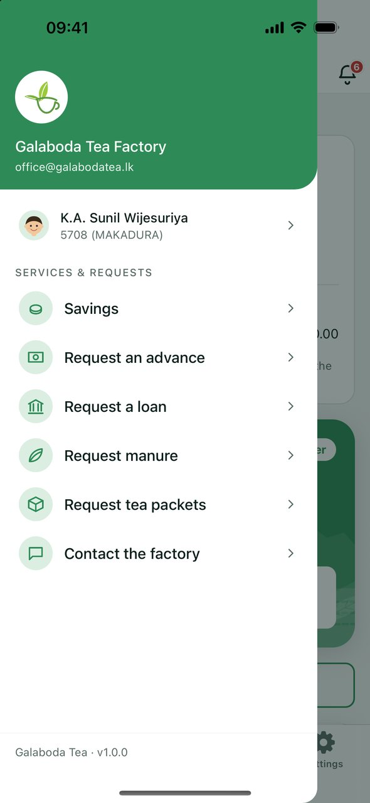
Figure 3.2 The side menu
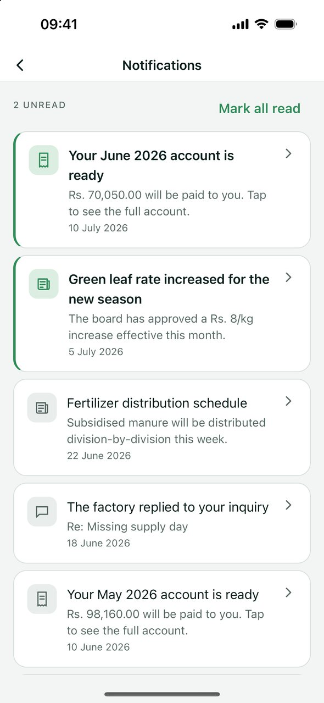
Figure 3.3 Notifications
Where
What you find there
Tabs at the bottom
Account (your bill), Income history, News, Settings. Profile opens from Settings and the side menu
Side menu: tap ☰ at the top left
Savings, Request an advance, Request a loan, Request manure, Request tea packets, Contact the factory. Only the services your factory runs appear
Bell at the top right
Everything the factory has sent you. The red number is how many you have not read
4. Your monthly account
The Account tab shows your newest published Green Leaf Account. It is laid out like the printed slip, so you can hold the paper next to your phone and find the same figures in the same order.
4.1 This month so far
At the top, the card This month so far shows the month in progress: the kilos weighed so far, how many days you supplied, the last day, a bar for each day, and what the factory approved for you this month (Figure 3.1: July 2026, 247.5 kg on 18 days, an advance of Rs. 15,000.00 approved).
No money on this card
The rate for a month is set after the tea auction, so the card shows kilos only. When the month ends it says "Month ended, bill being prepared" until that bill is published. (Your factory decides whether to show this card.)
4.2 The bill
Below it is the bill: the month, the final balance (what you are paid), how you are paid, total kilos and the rate. Scroll down for every part of it.
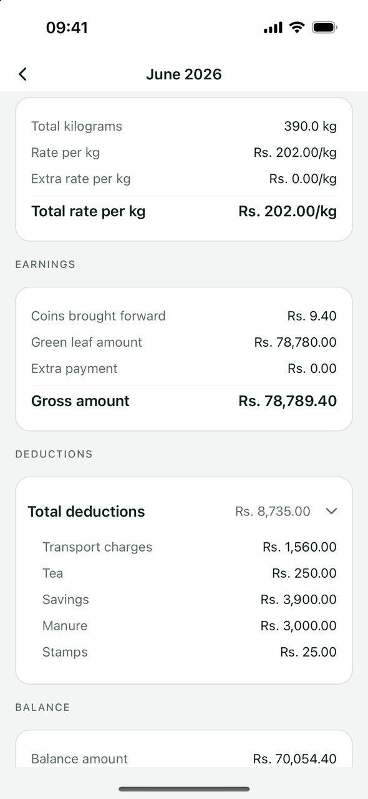
Figure 4.1 Rate, earnings and deductions
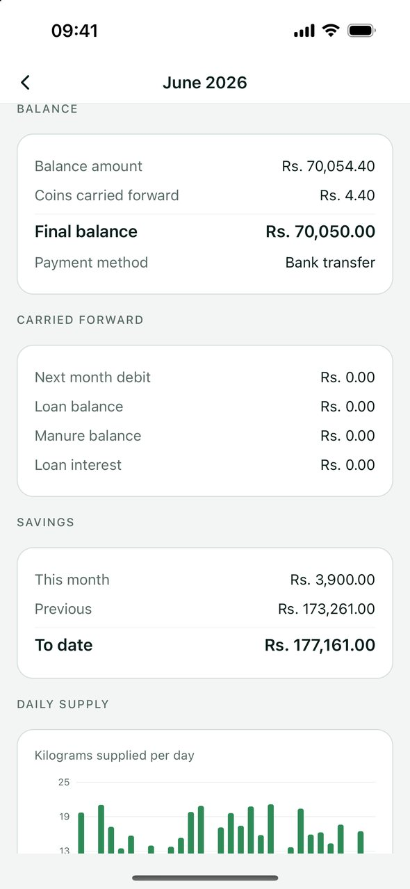
Figure 4.2 Balance, carried forward, savings
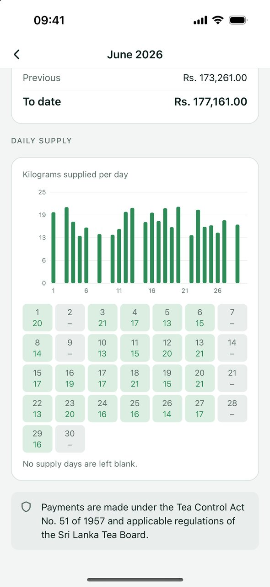
Figure 4.3 Daily supply
Part
What it tells you
Rate
Your kilos for the month and the price per kilo (plus any extra rate)
Earnings
Coins brought forward from last month, the green leaf amount (kilos × rate), any extra payment, and the gross amount
Deductions
Tap Total deductions to open the lines that have an amount: transport, tea, savings, loan, advance, manure, other deductions (with the office's reason), stamps, previous debts
Balance
Gross less deductions, the coins carried to next month, and the final balance you are paid
Carried forward
Debt carried to next month, the loan still owed, manure still owed, and this month's loan interest in rupees
Savings
This month's savings, the balance before, and your savings to date
Daily supply
A bar and a box for every day of the month with the kilos weighed. Days with no leaf are blank
4.3 Save, share or ask
Save as PDF makes a PDF of the bill, the same as the screen, to save or send.
Ask about this bill, at the bottom, opens a message to the office about that month.
Older months: open them from Income history (section 6).
Before the auction
A month whose rate is not set yet shows its kilos and blanks for the money, never "Rs. 0". If you see "No bill is available yet", the office has not published your bill.
5. Reading a bill: two worked examples
5.1 June 2026: a simple month
Kilos 390.0 × rate Rs. 202.00 = green leaf 78,780.00
Coins brought forward from May 9.40
Gross amount 78,789.40
Deductions: transport 1,560 + tea 250 + savings 3,900
+ manure 3,000 + stamps 25 = 8,735.00
Balance amount 78,789.40 − 8,735.00 = 70,054.40
Paid in tens (Final balance) = 70,050.00
Coins carried forward to July 4.40
The factory pays in whole tens of rupees. The Rs. 4.40 left over is not lost: it is the first line of July's earnings.
5.2 March 2026: a loan instalment and "Other deductions"
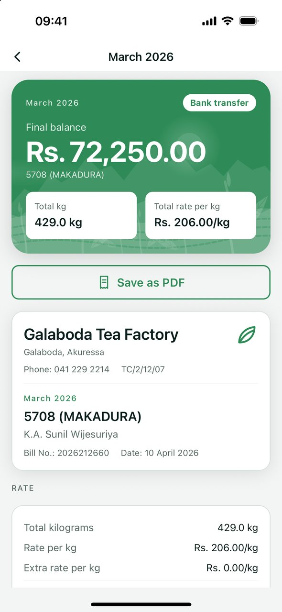
Figure 5.1 March 2026
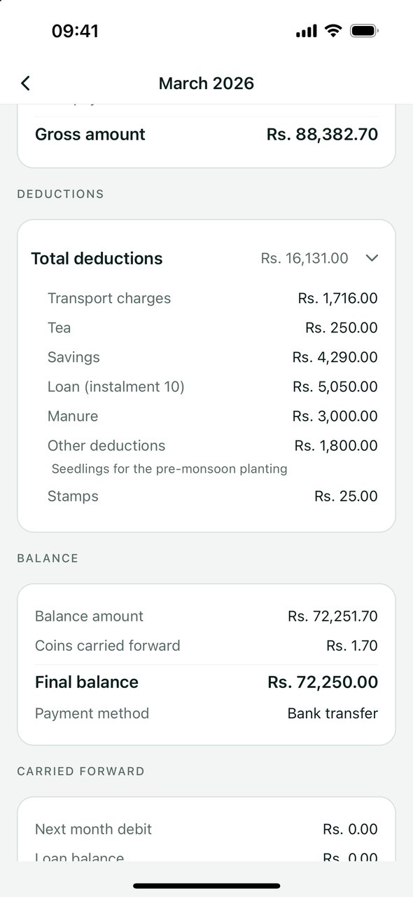
Figure 5.2 March deductions, opened
Gross amount 88,382.70
Transport charges 1,716.00
Tea 250.00
Savings 4,290.00
Loan (instalment 10) 5,050.00 (instalment 5,000 + interest 50)
Manure 3,000.00
Other deductions 1,800.00 "Seedlings for the pre-monsoon planting"
Stamps 25.00
Total deductions 16,131.00
Balance amount 72,251.70
Final balance (paid in tens) 72,250.00 coins 1.70 to April
Loan (instalment 10) is the tenth monthly repayment of a loan. The "Carried forward" panel shows the loan still owed and the month's interest (Rs. 50.00).
Other deductions always carries the office's reason under it.
Manure balance Rs. 9,000.00 is fertilizer still to be repaid on later bills.
6. Income history
"Income" in the app is your gross amount each month. Choose the year at the top, then one of three views:
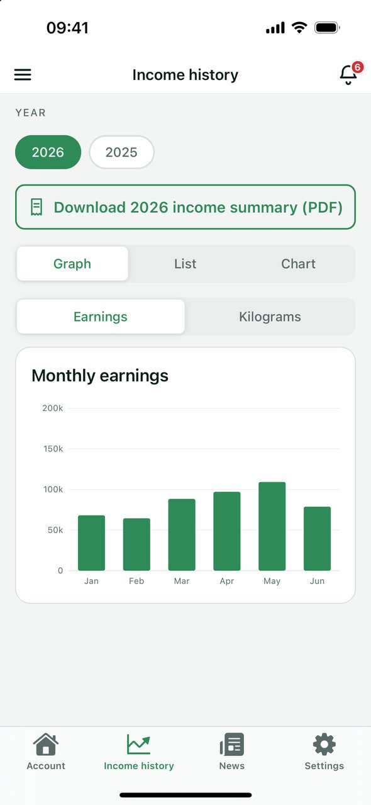
Figure 6.1 Graph
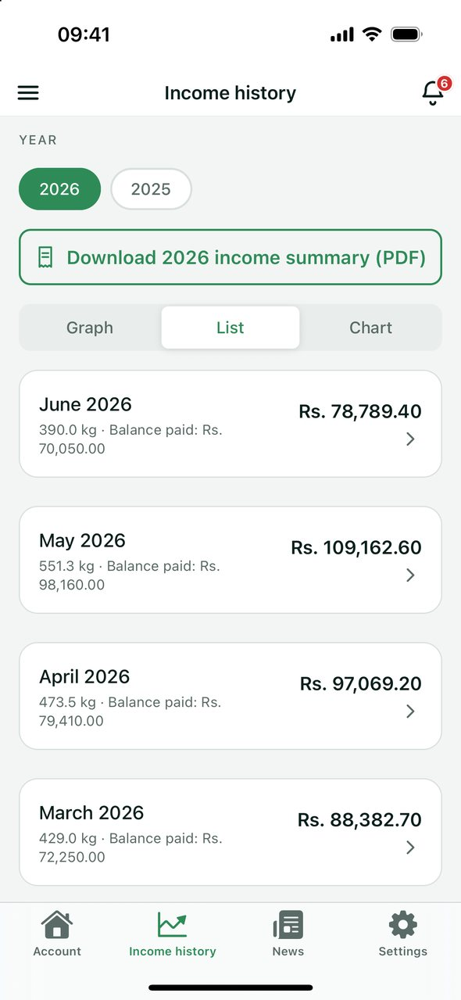
Figure 6.2 List
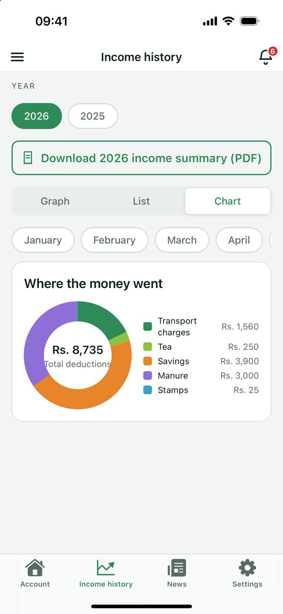
Figure 6.3 Chart
Graph: a bar for each month. Switch between Earnings and Kilograms: this shows at a glance if you supplied more but earned less.
List: each month with its kilos, gross and the balance paid. Tap a month to open its full bill.
Chart: where one month's money went. In June, Rs. 8,735 of deductions: transport 1,560, tea 250, savings 3,900, manure 3,000, stamps 25.
Download 2026 income summary (PDF) saves the year as a PDF statement.
7. Asking for credit: what every request screen does
Open the side menu (☰) and choose the request. Advance, loan, manure and tea packets all work the same way:
Read the rule in the blue box at the top. It says in one sentence how the factory decides.
Read your figures in the card below it: your history, the limit and how it was worked out. These are the factory's own figures.
Fill in the form: the amount (or quantity), the choices, and a reason if you want to give one. An amount above your limit is refused as you type it.
Tap Submit request. One tap sends one request, even on a weak signal.
Follow it in the history at the bottom of the screen: Pending, Approved, Rejected or Cancelled, with the office's note. You get a notification when it is decided.
Changed your mind? A pending request can be cancelled from its row. If the office has already decided, the cancel is refused.
When there is no form
If you cannot ask right now, the screen shows an orange message saying why instead of the form: a request is already waiting, a loan is still owed, an advance is not yet deducted, not enough months of history, the manure limit is reached, or the factory has not set a price.
Asking is not getting
The office may approve a different amount or term. It checks your limit again when it decides.
8. Asking for an advance
An advance is cash against the leaf you have already supplied this month. It is taken back in full on this month's bill.
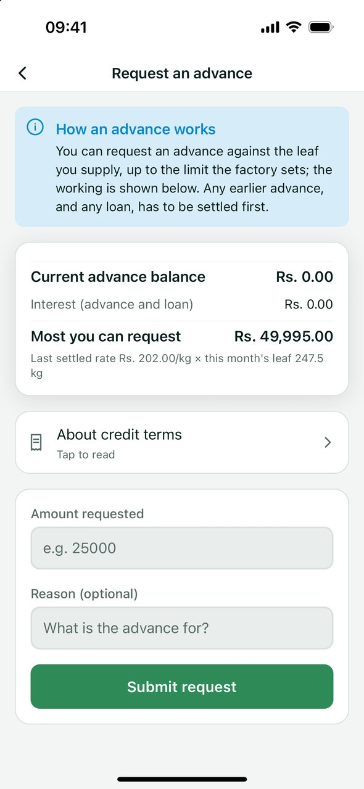
Figure 8.1 Your advance limit
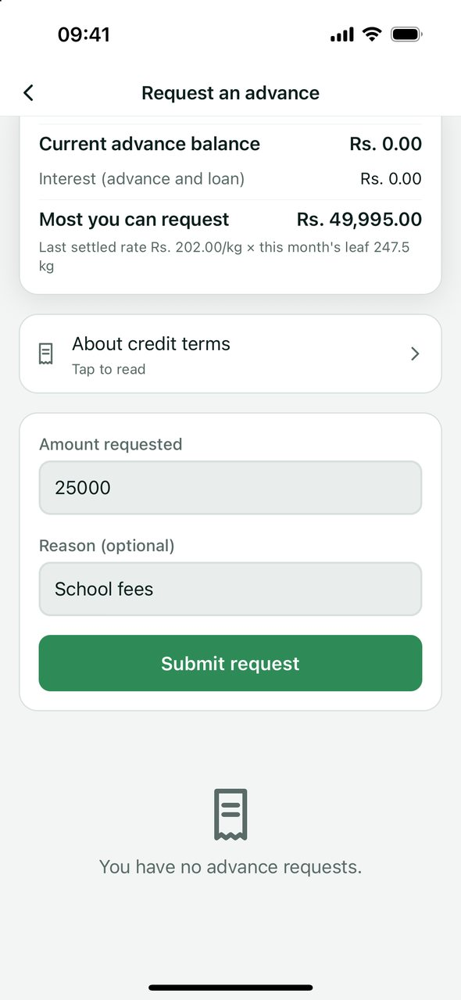
Figure 8.2 Asking for Rs. 25,000
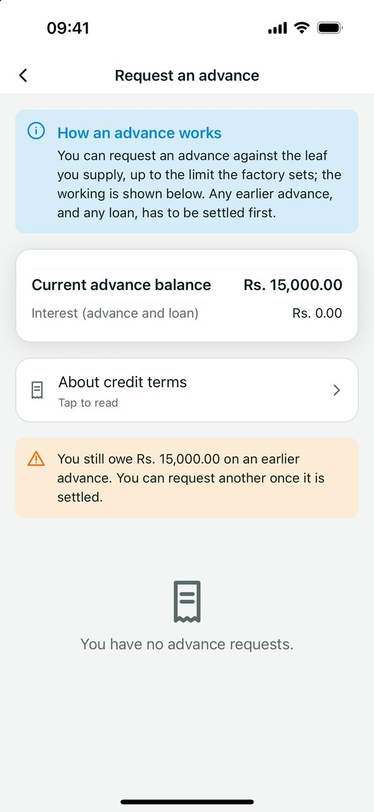
Figure 8.3 An earlier advance still owed
Example (Figure 8.1)
Last settled rate (June) Rs. 202.00 a kg
This month's leaf so far (July) 247.5 kg
Most you can request 202.00 × 247.5 = Rs. 49,995.00
Supplier 5708 asks for Rs. 25,000 for school fees (Figure 8.2). Once approved, it comes off the July bill in full. The limit grows each day more leaf is weighed.
There is no form while an earlier advance is still owed (Figure 8.3: "You still owe Rs. 15,000.00 on an earlier advance"), or while a loan is owed.
An advance cannot be spread over months. If the month's leaf does not cover it, the rest is carried to next month as debt.
9. Asking for a loan
A loan is cash against your record of income, repaid over the months you choose.
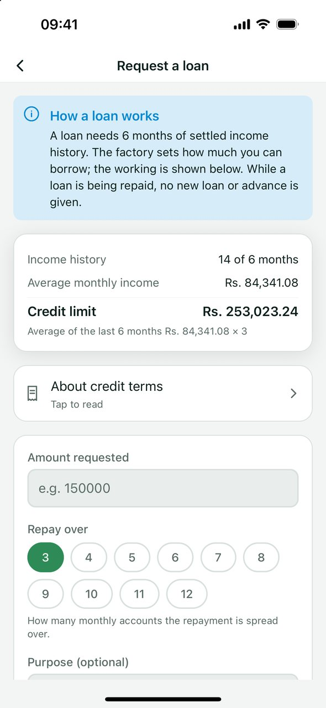
Figure 9.1 Your loan limit
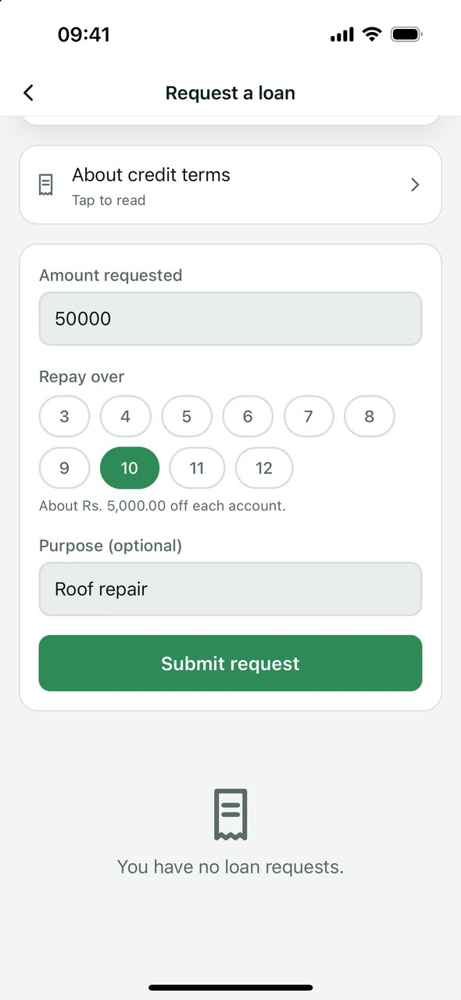
Figure 9.2 Rs. 50,000 over 10 months
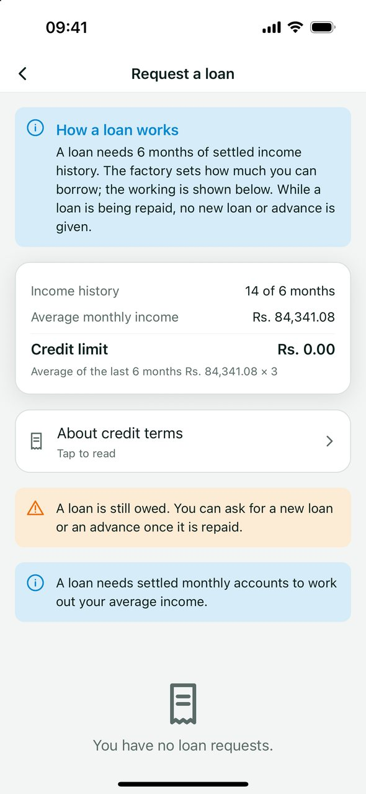
Figure 9.3 A loan is still owed
Example (Figures 9.1 and 9.2)
Income history 14 settled months (6 needed)
Average monthly income Rs. 84,341.08 (last 6 months)
Credit limit 3 × 84,341.08 = Rs. 253,023.24
Asks Rs. 50,000, repay over 10 → "About Rs. 5,000.00 off each account"
Type the amount in Amount requested.
Under Repay over, tap the number of monthly accounts (3 to 12). The figure under it shows what each bill will take, so you can see if it is affordable.
Add a purpose if you want (for example "Roof repair") and tap Submit request.
Each bill takes the same instalment, numbered: "Loan (instalment 3)". In a month with little leaf the factory may take less, and the loan simply runs a little longer.
Interest, if your factory charges it, is shown on each bill as "Loan interest".
While a loan is owed, you cannot ask for a new loan or an advance (Figure 9.3). Manure is not affected.
10. Asking for manure
Fertilizer from the factory store, on credit, repaid over the months you choose.
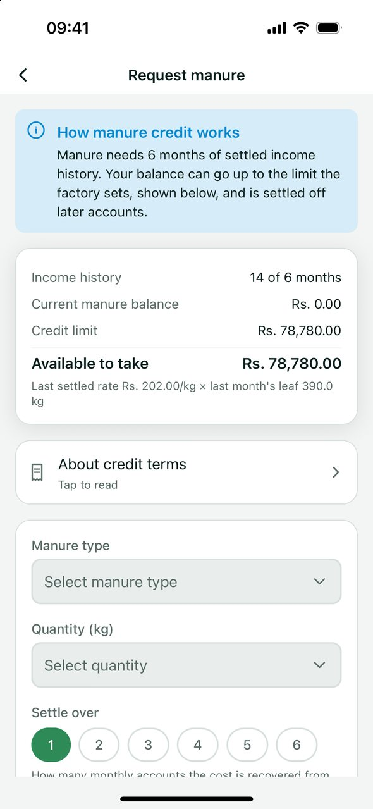
Figure 10.1 Manure limit and form
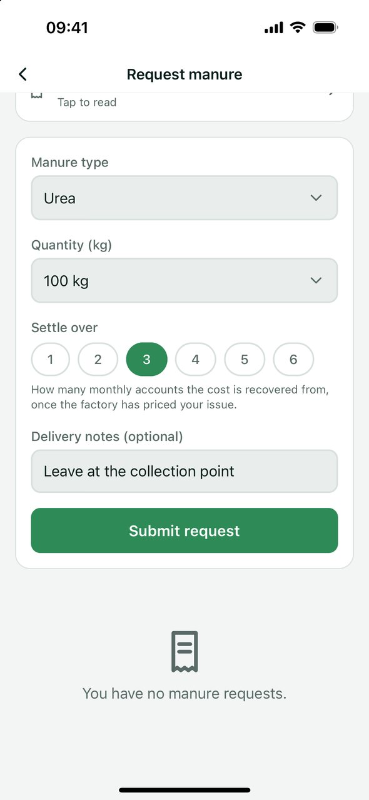
Figure 10.2 100 kg of Urea over 3 months
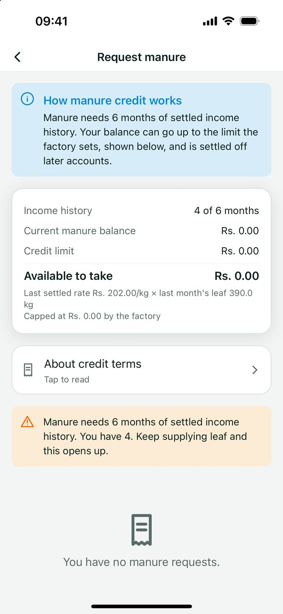
Figure 10.3 Not enough history yet
Choose the Manure type from the factory's list.
Choose the Quantity (kg): 25 to 400 kg in steps of 25, or type another amount.
Under Settle over, tap how many monthly accounts (1 to 6).
Add delivery notes if you want, and tap Submit request.
Example
Limit: last settled rate 202.00 × last month's leaf 390.0 kg = Rs. 78,780.00
Urea is sold in 50 kg bags at Rs. 9,800 a bag
100 kg → 2 bags → Rs. 19,600, recovered over 3 accounts
You do not type a price: the factory prices the request from its own list, in whole bags (60 kg would be 2 bags).
Manure needs 6 settled months of history (Figure 10.3: "You have 4. Keep supplying leaf and this opens up").
11. Asking for tea packets
Packets of the factory's own tea for your household. This is not credit: the cost comes off your next bill's Tea line.
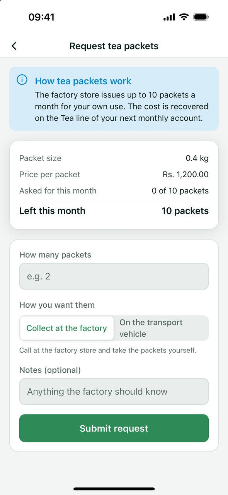
Figure 11.1 Packet price and allowance
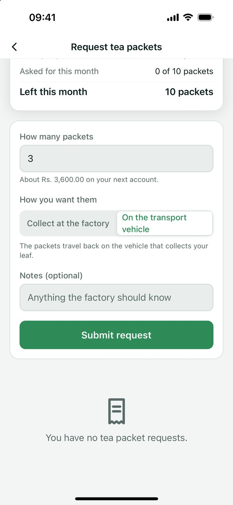
Figure 11.2 3 packets on the vehicle
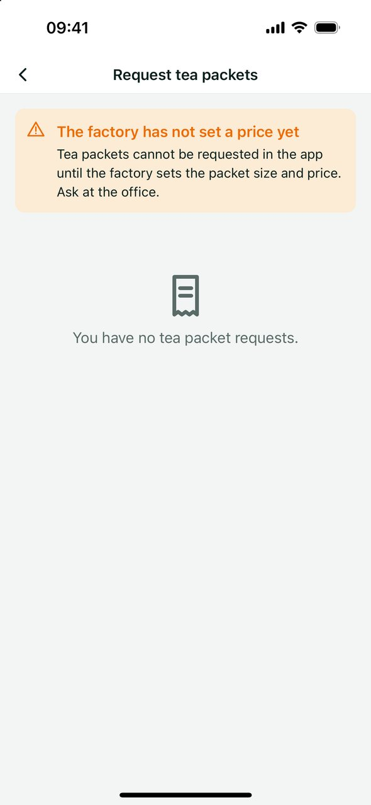
Figure 11.3 No price set yet
Type How many packets. The cost appears under it ("About Rs. 3,600.00 on your next account" for 3 packets at Rs. 1,200).
Choose How you want them: Collect at the factory or On the transport vehicle that collects your leaf.
Tap Submit request.
The factory allows a number of packets each month (10 in this example); the screen shows how many are left. If the factory has not set a price, you can only ask at the office (Figure 11.3).
12. Savings
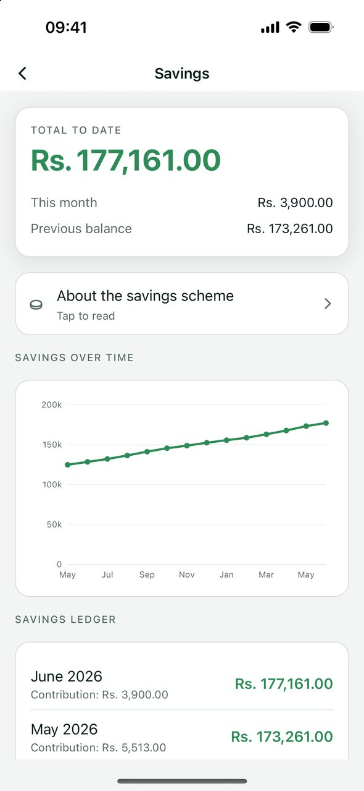
Figure 12.1 Your savings
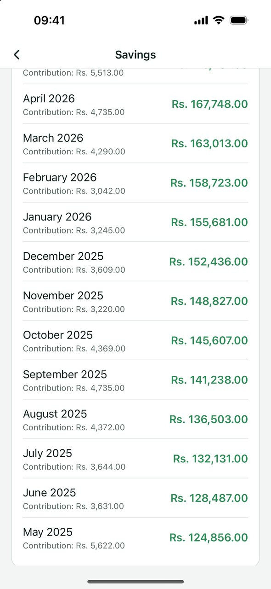
Figure 12.2 The savings ledger
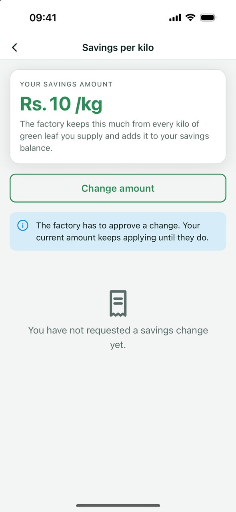
Figure 12.3 Savings per kilo
Savings (side menu) shows your total to date, this month's savings and the balance before, a chart, and every month's contribution with the balance after it. Example: Rs. 173,261.00 + 3,900.00 = Rs. 177,161.00.
Your savings each month = your savings per kilo × your kilos (Rs. 10 × 390 kg = Rs. 3,900).
To change your savings per kilo: Settings → Savings per kilo → Change amount, choose the new amount, send. Your current amount stays until the factory approves; the change starts from the next month not yet closed. Choosing 0 stops saving.
To take savings out: ask at the office. Withdrawals are allowed in the factory's withdrawal month (usually April) and are paid on your next bill.
13. Your profile and how you get paid
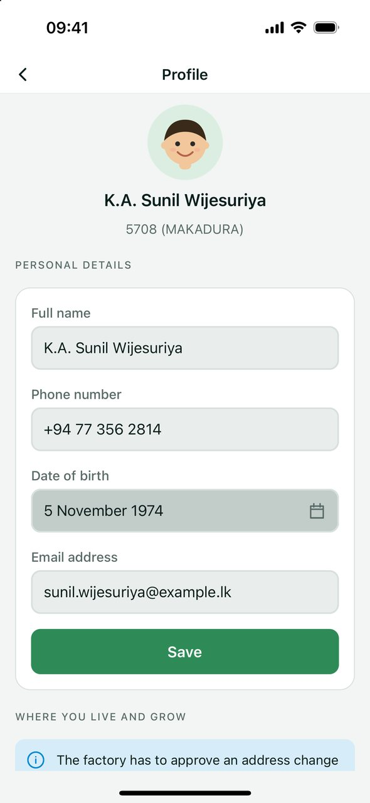
Figure 13.1 Personal details
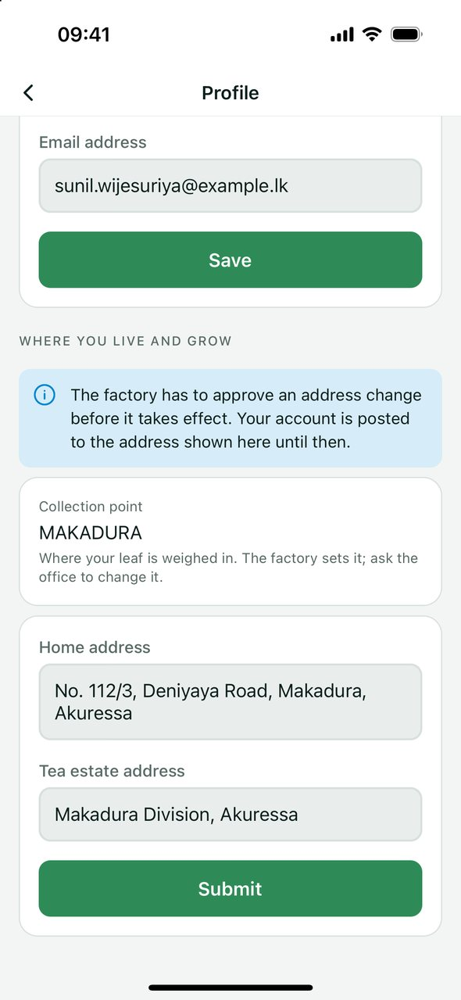
Figure 13.2 Collection point and addresses
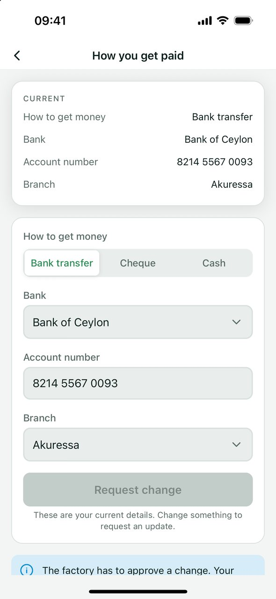
Figure 13.3 How you get paid
What
How to change it
When it changes
Name, phone, date of birth, email
Profile → edit → Save
At once
Home address, tea estate address
Profile → Where you live and grow → Submit
When the factory approves
Cheque, bank transfer or cash; bank, account number, branch
Settings → Bank details (How you get paid) → change → Request change
When the factory approves
Collection point
Shown on Profile; ask the office
Set by the factory
Avatar (10 pictures)
Settings → Avatar
At once
While a change waits
The app keeps showing your current bank account with "pending approval" beside the new one, and your money keeps going to the current account until the factory approves. The office checks your passbook before approving a new bank account.
14. Contacting the factory
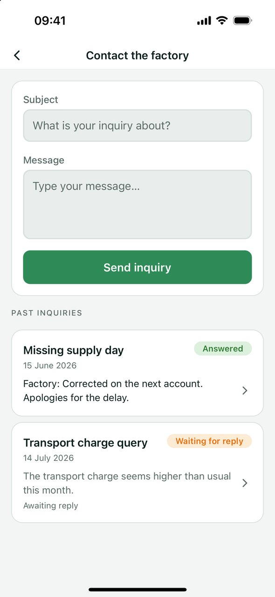
Figure 14.1 A new message and past ones
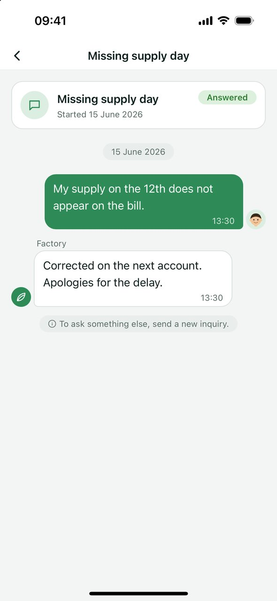
Figure 14.2 A conversation
Side menu → Contact the factory.
Type a Subject and your Message (up to 2,000 characters), then tap Send inquiry.
Past inquiries show "Waiting for reply" or "Answered". Tap one to read the office's reply and write back.
Example (Figure 14.2): "My supply on the 12th does not appear on the bill." The office answered: "Corrected on the next account. Apologies for the delay." Once the office closes a conversation, start a new inquiry for something else.
15. News and notifications
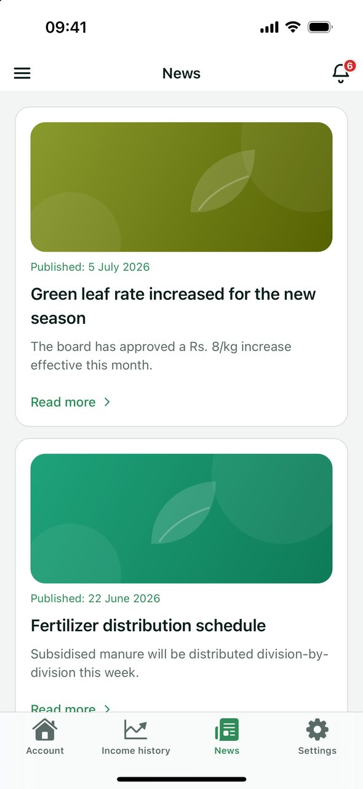
Figure 15.1 News
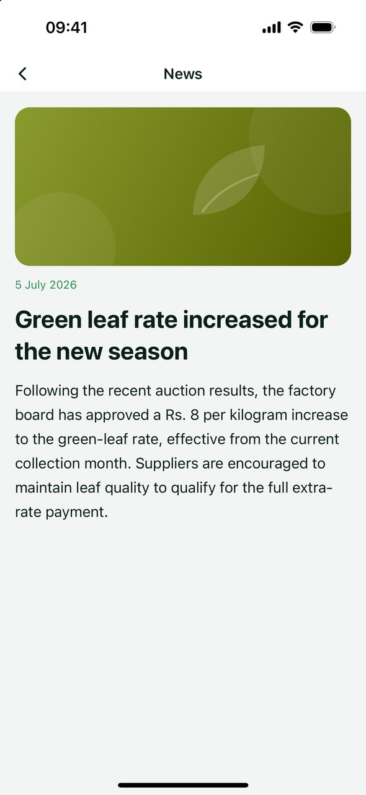
Figure 15.2 An article
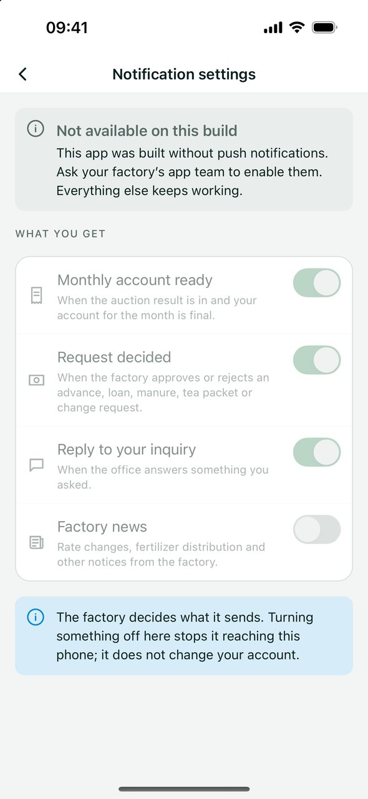
Figure 15.3 Notification settings
News tab: the factory's articles, newest first. Pull down to refresh; tap Read more to open one.
Bell: your account ready, a request decided, a reply to your inquiry, factory news. Tap one to open what it is about; Mark all read clears the red number. Everything stays in the list even if you missed the phone notification.
Settings → Notifications (Figure 15.3): turn each kind on or off.
16. Settings
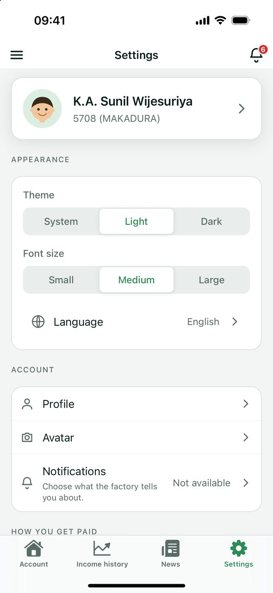
Figure 16.1 Appearance and language
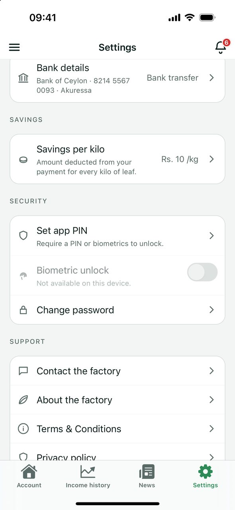
Figure 16.2 Payment, savings, security
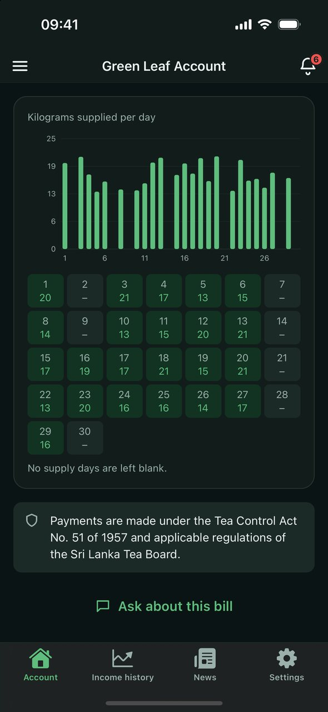
Figure 16.3 Dark theme
Setting
What it does
Theme
System, Light or Dark (Figure 16.3)
Font size
Small, Medium or Large text everywhere
Language
Sinhala, English or Tamil
Set app PIN, Biometric unlock
Lock the app with a PIN, fingerprint or face
Auto-lock
Ask for the PIN after leaving the app: immediately, after 1 or 5 minutes, or never
Change password
Type your current password, then the new one twice, and tap Update password
Bank details, Savings per kilo
Sections 12 and 13
Contact the factory, About the factory, Terms, Privacy, FAQ, Support
Section 17
Log out
Signs you out of this phone
Delete my account
Asks the factory to close your app account
17. Help pages
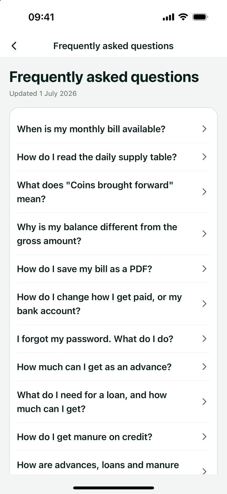
Figure 17.1 Frequently asked questions
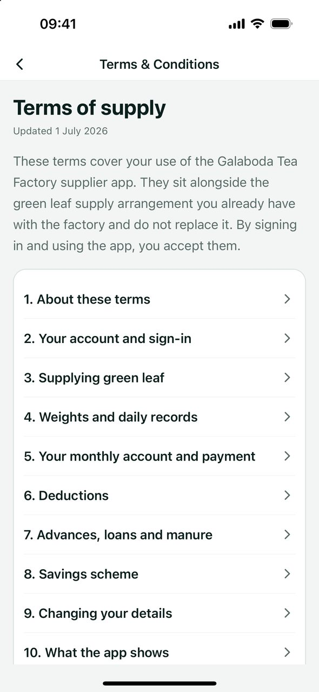
Figure 17.2 Terms of supply
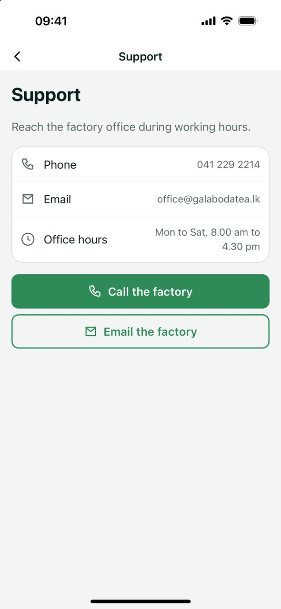
Figure 17.3 Support
From Settings: the FAQ answers the common questions (when is my bill ready, what are coins brought forward, how much can I borrow); Terms and Privacy are the factory's conditions; Support shows the office telephone, email and hours, with buttons to call or email.
18. Questions and answers
Question
Answer
My bill for last month is not showing.
The office publishes the bills after the auction rate is known, usually in the first two weeks of the next month. Until then you see the previous bill, and "This month so far" says "Month ended, bill being prepared".
The money figures are blank.
That month's rate is not set yet. Blank is not zero.
Why was I paid Rs. 70,050 and not Rs. 70,054.40?
The factory pays in whole tens. The Rs. 4.40 is "Coins carried forward" and is paid on next month's bill.
Why can't I ask for a loan or an advance?
Read the orange message on the screen. Most often a loan is still owed, an earlier request is still waiting, or there are not enough settled months yet.
The app and my paper slip disagree.
They should always agree. Tap "Ask about this bill" or call the office.
I changed my bank account but nothing changed.
It waits for the factory's approval. Until then the current account is used.
The app says my session has ended.
Sign in again. If the office reset your password, use the new one.
I forgot my PIN.
On the lock screen tap Use password instead and sign in with your supplier number and password.